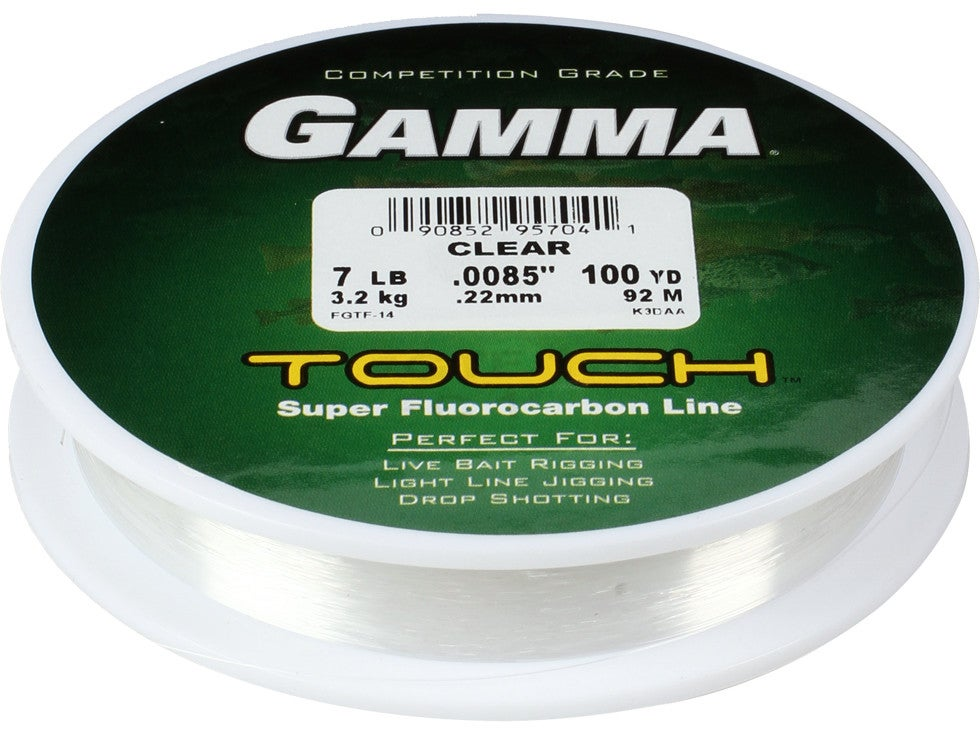

Gamma Touch Fluorocarbon
Diameter chart, reel capacity & backing guide

Touch is Gamma's finesse-focused fluorocarbon, with 2, 3, 4, 5, 7, 8 and 9 lb U.S. sizes. The manufacturer specifically positions it for drop-shot techniques. Its half-thousandth-inch diameter steps matter: 7 lb is 0.0085 inch, not a rounded generic 0.009-inch line.
- Construction
- 100% fluorocarbon; Gamma-processed finesse formulation
- Listed strengths
- 2-9 lb
- Line type
- Fluorocarbon main line
Is Touch Fluorocarbon right for your setup?
Touch is Gamma's light fluorocarbon option for finesse presentations, with strengths extending to 9 lb. Consider it for a small-diameter working line on suitably matched light tackle. Choose enough strength for the rig and cover, then plan a working section with spare line for retying; use backing if a full fresh fluorocarbon fill would use more line than you need.
How much Touch Fluorocarbon will fit?
Calculated estimates, not measured fills. Stop at the reel manufacturer's fill level even if some line remains.
Gamma Touch Fluorocarbon diameter chart
Official Touch tables matched to U.S.-size product codes across 100-, 200-, 500- and 1000-yard packages. Whitespace inside printed product codes is normalized only for matching, not used to alter numeric values.
| Strength | Inches | mm | Spools (yd) |
|---|---|---|---|
| 0.0045 | 0.110 | 100, 200, 500, 1000 | |
| 0.0055 | 0.140 | 100, 200, 500, 1000 | |
| 0.0065 | 0.160 | 100, 200, 500, 1000 | |
| 0.0075 | 0.190 | 100, 200, 500, 1000 | |
| 0.0085 | 0.220 | 100, 200, 500, 1000 | |
| 0.0095 | 0.240 | 100, 200, 500, 1000 | |
| 0.0105 | 0.270 | 100, 200, 500, 1000 |
Choosing your Touch Fluorocarbon strength
The 2-5 lb sizes measure 0.0045-0.0075 inch. Match these light lines to a suitable rod, carefully set drag and the actual cover; they are not substitutes for heavier line simply because a fish has been landed on them before.
The next offered size after 5 lb is 7 lb. There is no verified 6 lb Touch row in this range, so do not borrow 6 lb Edge's diameter or relabel the 7 lb Touch product code.
The 7, 8 and 9 lb steps are 0.0085, 0.0095 and 0.0105 inch. Keep the fourth decimal for capacity calculations even if a display rounds the chart; the 9 lb size is not a universal heavy-cover recommendation.
This is a specification-based Touch Fluorocarbon setup guide, not a ReelCalc hands-on casting, abrasion or breaking-strength test.
Want a guided recommendation?
Continue in the Setup WizardSame pound test, different diameters
At your selected strength
Loading diameter comparisons...
What changes with another line?
Nearby diameters in the line database
| Line | Strength | Inches | Difference |
|---|---|---|---|
| Loading line database... | |||
Backing, working line & leaders
Choose the refill for more working line
The 100-yard filler is useful for a planned short working section; a verified 200-yard refill gives more room for a full fill or reserve. Keep package length tied to its matching table and product code.
Keep a buried knot out of a finesse cast
A short fresh Touch section over backing can save line, but measure enough for your longest cast plus trimming and runs. Do not let a small package dictate a working length that exposes the connection during normal use.
Retain the exact diameter
Touch's 0.0005-inch increments are part of the manufacturer specification. Use the exact stored figure when comparing it with Edge or another fluorocarbon; a rounded chart value is for display only.
How Much Fits on These Reels?
Estimated full-spool capacity for the Touch Fluorocarbon strength selected above, with no backing. These are calculated examples, not physical tests or recommendations for every pairing.
Loading capacity estimates...
Touch Fluorocarbon questions, answered
Is Touch intended for drop-shot fishing?
Gamma specifically positions Touch for finesse and drop-shot techniques. Strength still needs to match the cover, hook, rod and drag; that positioning is not a universal setup rule.
Is there a 6 lb Gamma Touch?
The reviewed official Touch tables list 2, 3, 4, 5, 7, 8 and 9 lb. No 6 lb row is supplied here.
Why are Touch diameters shown with four decimals?
The official inch values use half-thousandth increments, such as 0.0085 inch at 7 lb. Rounding those before calculation changes the estimated capacity.
How much Touch Fluorocarbon fits my reel?
Use the selected Touch Fluorocarbon diameter with your reel's published capacity. Pound test is a product strength label, not a universal diameter. Stop filling at the reel manufacturer's recommended level.
Does Touch Fluorocarbon require backing?
Backing is optional for a full mainline fill. It can make sense under a shorter fresh working section, but the connection must stay below normal casting depth with enough reserve for runs and retying.
Specifications & sources
Sources retrieved September 13, 2026. Official Touch tables matched to U.S.-size product codes across 100-, 200-, 500- and 1000-yard packages. Whitespace inside printed product codes is normalized only for matching, not used to alter numeric values. Only the listed confirmed strengths and spool sizes are included. Manufacturer performance descriptions are attributed claims; calculated capacities are estimates, not measured fills. No current stock or price is implied.
Calculations use the catalog's listed inch diameters. Published inch and millimeter values may differ slightly because of rounding.
- Official Gamma Touch Fluorocarbon Official Touch tables matched to U.S.-size product codes across 100-, 200-, 500- and 1000-yard packages. Whitespace inside printed product codes is normalized only for matching, not used to alter numeric values.
- Official Gamma package specifications Official Touch tables matched to U.S.-size product codes across 100-, 200-, 500- and 1000-yard packages. Whitespace inside printed product codes is normalized only for matching, not used to alter numeric values.
- Official Gamma package specifications Official Touch tables matched to U.S.-size product codes across 100-, 200-, 500- and 1000-yard packages. Whitespace inside printed product codes is normalized only for matching, not used to alter numeric values.
- Official Gamma package specifications Official Touch tables matched to U.S.-size product codes across 100-, 200-, 500- and 1000-yard packages. Whitespace inside printed product codes is normalized only for matching, not used to alter numeric values.